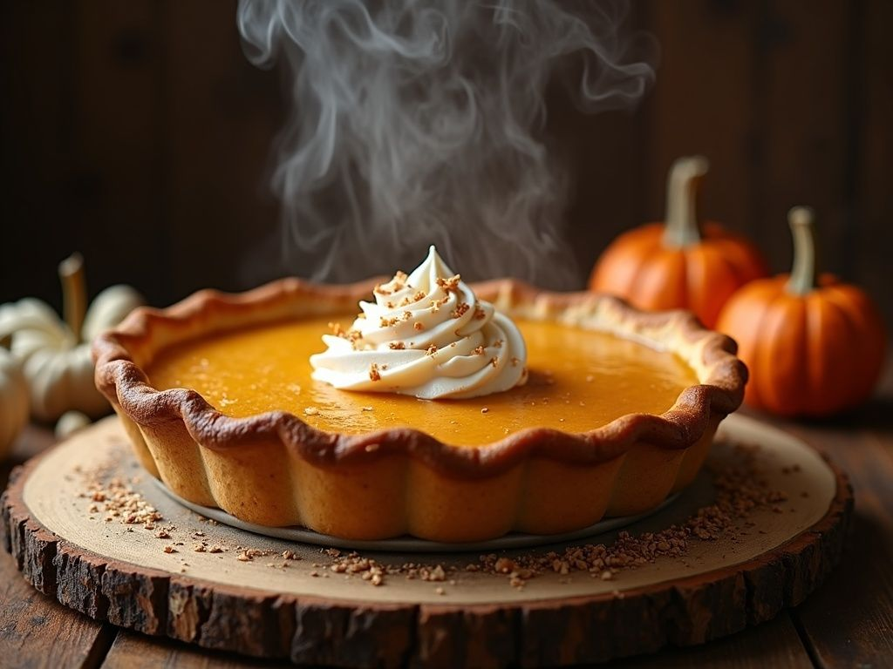

Pumpkin Pie Recipe

Description
This is an excellent recipe to make for Thanksgiving! The only pumpkin pie you will ever want to make again.
Ingredients
- 1 (15 oz) can pumpkin puree
- 1 (14 oz) can Eagle Brand Sweetened Condensed Milk
- 2 large eggs
- 1 teaspoon ground cinnamon
- 1/2 teaspoon ground ginger
- 1/2 teaspoon ground nutmeg
- 1/2 teaspoon salt
- 1 (9 inch) unbaked pie crust
Steps
-
Gather all ingredients and preheat the oven to 425 degrees F (220 C).
-
Whisk pumpkin puree, condensed milk, eggs, cinnamon, ginger, nutmeg, and salt together in a medium bowl until smooth.
-
Pour into crust. Bake in the preheated oven for 15 minutes.
-
Reduce oven temperature to 350 degrees F (175 C) and continue baking until a knife inserted 1 inch from the crust comes out clean, 35 to 40 minutes. Let cool before serving.
Back to Home